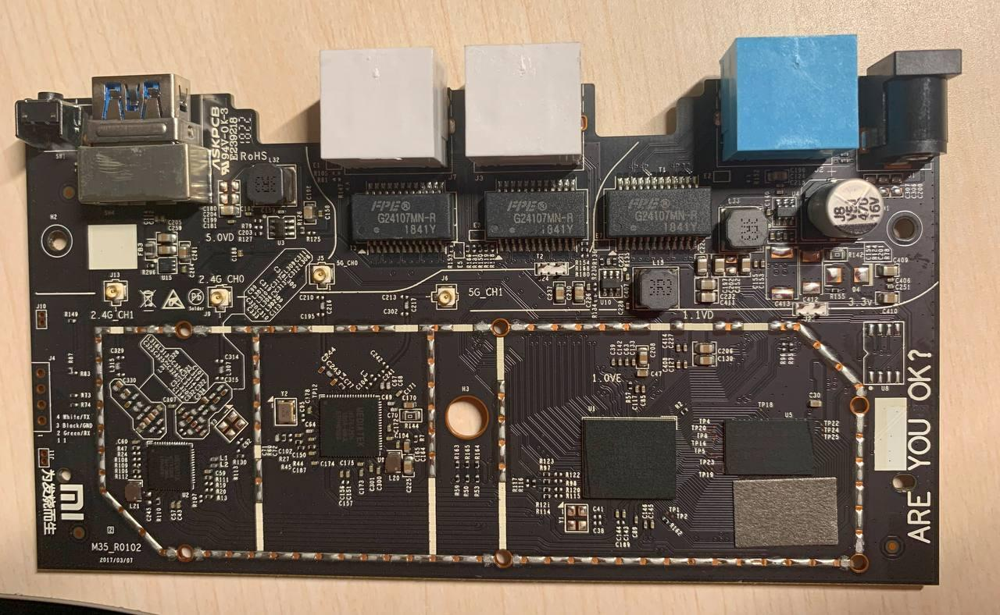
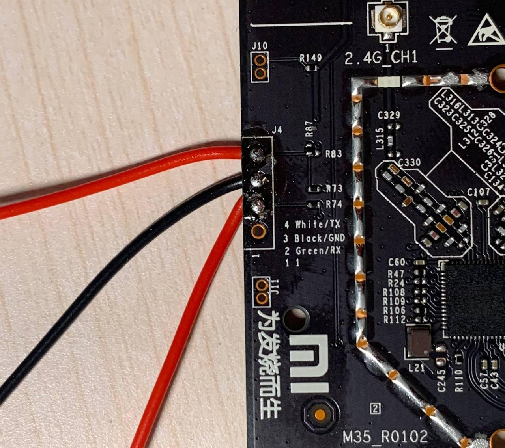

本来路由器闲置了一年了都没咋用了，前两天想把OpenWrt系统刷回原厂系统。
然鹅刷原厂固件时忘记改环境变量了，因为第三方Boot Loader也被我顺带刷回了原厂的所以现在开机无限重启。
之前买单片机套件时赠了一条usb转ttl线的，但是被我放学校了。只好再从万能的某宝再买一条线，尝试着救砖了。
(在某宝发现了一家店啥元件都有，还特别便宜。于是我还顺带买了很多杜邦线、电阻、LED灯、面包板等小玩意…)
砖了
拆机

Are You OK?
北方冬季气候干燥，拆机时记得放静电，找根铁丝把自己连地线上 (找个金属外壳是接地的电器和自己连上也行)。
拆开路由器外壳，卸下主板，顺手拆掉了散热片（屏蔽罩）。
串口在图片上主板的左侧，旁边有标记，从上到下依次是TX、GND、RX、1。需要注意的是主板上的TX要接到usb串口的RX，主板上的RX要接到usb串口的TX，GND连GND，VCC不用连。为了防止接错线，小米还十分贴心的标注了每个接口对应的连接线的颜色。

I'm very OK!
找出家里吃灰好几年差点被我扔掉的电烙铁，刮刀头刮了半天电烙铁才上锡，把新买的杜邦线母线焊到主板上，和ttl串口线相连。
(电烙铁太破了根本焊不上锡，焊得很丑，emmm)
实际上可以买个4PIN单排针焊上去，把串口接到排针上就可以，我直接把电线焊到上面以后用起来会很麻烦。
刷机
以下部分基于Arch Linux，其他系统的操作方式可能不一样（例如Windows可能需要超级终端访问串口，再想办法开一个tftp服务器） 刷机的原理: 通过ttl串口线连接路由器的主板，让路由器访问电脑上的tftp服务器，刷第三方Boot Loader。
- 首先电脑上装一个tftp服务器。
$ sudo pacman -S tftp-hpa
$ sudo systemctl start tftpd.service
tftp的默认目录为/srv/tftp。
这里使用HackPascal制作的Breed（第三方Boot Loader），下载链接，把下载好的Breed重命名为breed.bin，复制到tftp的默认目录。
$ cd /srv/tftp
$ sudo cp ~/Downloads/breed-mt7620-xiaomi-r3g.bin breed.bin
-
路由器插网线连电脑，设置静态ip地址192.168.1.3/24，将串口和电脑连接，先不给路由器通电，通常情况下usb串口的设备名称为
/dev/ttyUSB0，如果不确定的话可以dmesg查一下。 -
使用
screen连接串口，波特率为115200。
$ sudo pacman -S screen
$ sudo screen /dev/ttyUSB0 115200
路由器通电，终端上会显示路由器启动的信息，等几秒后在选择启动项的时候按9，通过TFTP加载Boot Loader。
如果串口在连接到电脑的情况下主板通电时没有响应，那就断开usb串口先给主板通电后再连接串口。 (我语文不好别骂我) 如果路由器没有变砖可以正常启动（蓝灯长亮），在正常开机过程中不能选择启动项。此时可以尝试在路由器开机后长按reset按钮7s以上直到主板重启，便可以选择启动项。
Please choose the operation:
1: Load system code to SDRAM via TFTP.
2: Load system code then write to Flash via TFTP.
3: Boot system code via Flash (default).
4: Entr boot command line interface.
7: Load Boot Loader code then write to Flash via Serial.
9: Load Boot Loader code then write to Flash via TFTP.
You choosed 9
9: System Load Boot Loader then write to Flash via TFTP.
Warning!! Erase Boot Loader in Flash then burn new one. Are you sure?(Y/N)y
之后设置路由器主机地址（192.168.1.1）和TFTP服务器地址(192.168.1.3)以及文件名称(breed.bin)。
Please Input new ones /or Ctrl-C to discard
Input device IP (192.168.31.1) ==:192.168.1.1
Input server IP (192.168.31.3) ==:192.168.1.3
Input Uboot filename (uboot.bin) ==:breed.bin
按回车后开始刷机，过几秒钟后路由器会自动重启，第三方Boot Loader刷写完成。
路由器断电，长按reset键的同时通电开机，灯闪烁后打开浏览器输入网址http://192.168.1.1便可访问breed后台。
Done
第三方Breed刷完后，先用Breed刷小米官方的开发版固件，开启ssh，之后按照小米路由器3G折腾之刷OpenWrt记录这篇文章刷OpenWrt。
BusyBox v1.19.4 (2018-10-29 07:52:03 UTC) built-in shell (ash)
Enter 'help' for a list of built-in commands.
-----------------------------------------------------
Welcome to XiaoQiang!
-----------------------------------------------------
$$$$$$\ $$$$$$$\ $$$$$$$$\ $$\ $$\ $$$$$$\ $$\ $$\
$$ __$$\ $$ __$$\ $$ _____| $$ | $$ | $$ __$$\ $$ | $$ |
$$ / $$ |$$ | $$ |$$ | $$ | $$ | $$ / $$ |$$ |$$ /
$$$$$$$$ |$$$$$$$ |$$$$$\ $$ | $$ | $$ | $$ |$$$$$ /
$$ __$$ |$$ __$$< $$ __| $$ | $$ | $$ | $$ |$$ $$<
$$ | $$ |$$ | $$ |$$ | $$ | $$ | $$ | $$ |$$ |\$$\
$$ | $$ |$$ | $$ |$$$$$$$$\ $$$$$$$$$ | $$$$$$ |$$ | \$$\
\__| \__|\__| \__|\________| \_________/ \______/ \__| \__|
root@XiaoQiang:~#